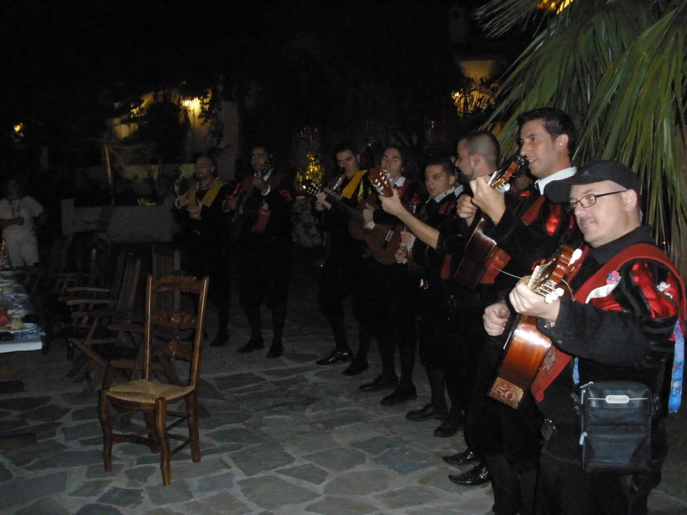
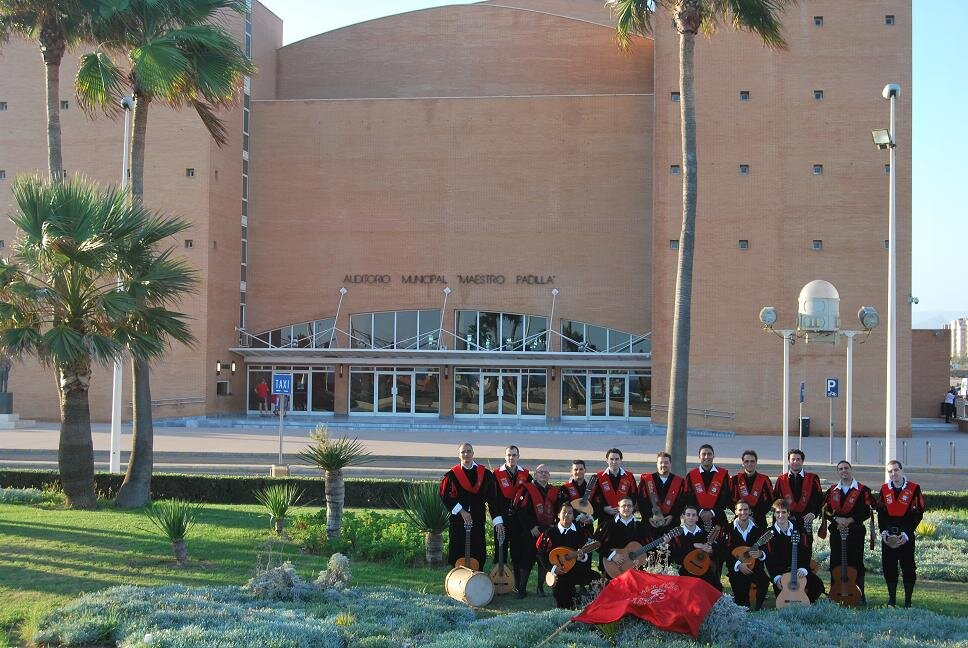
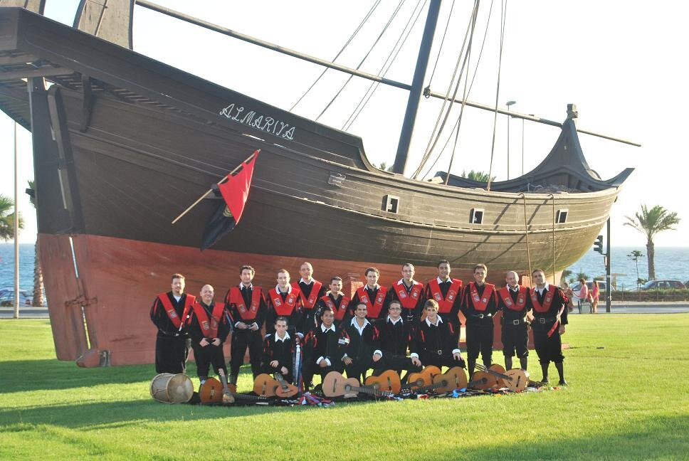
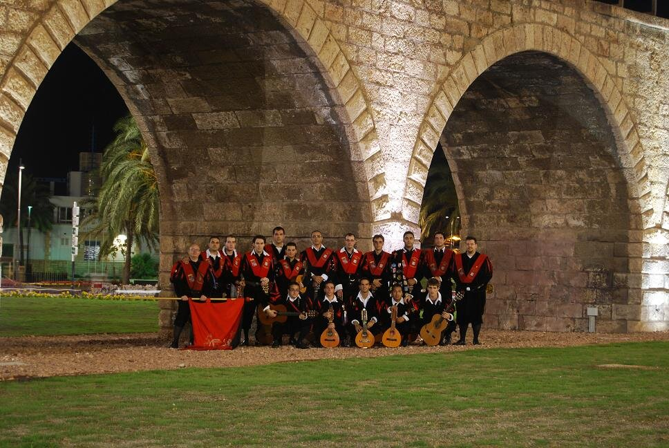

Vídeos
Selecciona un vídeo para reproducirlo
Ronda en la plaza mayor
Un momento de la ronda de primavera frente al ayuntamiento.

▶ 4:15Ronda en la plaza mayor
3:42 · 12/03/2026

▶ 4:15Certamen de tunas
5:10 · 28/02/2026

▶ 4:15Serenata de boda
2:58 · 15/01/2026

▶ 4:15Concierto de Navidad
4:21 · 03/12/2025